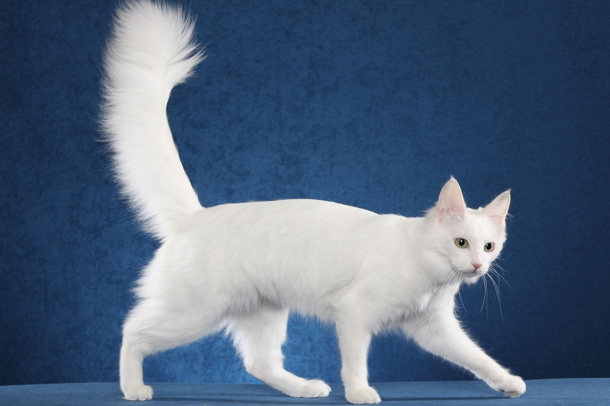

В описании породы и характера турецкой ангоры всегда отмечается, что эта кошка не только умна, но и чрезвычайно адаптивна. Кроме того, она очень игрива и ласкова. Она подойдет для семьи с маленькими детьми и станет жизнерадостным компаньоном для пожилых владельцев. Обычно эти питомцы выбирают своим фаворитом кого-то одного из членов семьи. Это уверенная в себе кошка с сильным характером, однако она нуждается во внимании человека и не любит оставаться в одиночестве. С другими домашними животными ангорская кошка уживается хорошо.
В описании породы турецкой кошки говорится, что это элегантное и грациозное животное среднего размера с мускулистым, но стройным корпусом. Шерсть мягкая и шелковистая, одного из множества признанных окрасов. На клиновидной голове расположены большие глаза и довольно большие, прямо поставленные уши, увенчанные небольшими аккуратными кисточками. Длинный, пышно опушенный хвост, имеющий сужение к кончику, придает движениям этой кошки дополнительное изящество. А длинные лапы ангорской турецкой кошки довершают ее благородный и изысканный облик.
